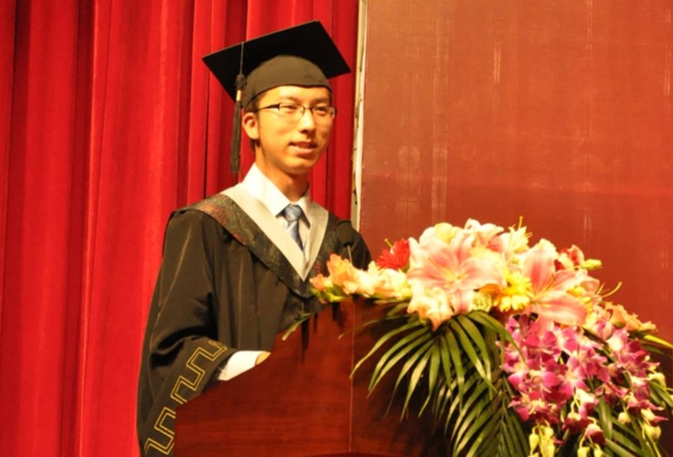

Contact: Institute of OR and Analytics Innovation 4.0, 3 Research Link Singapore 117602
Honors and Scholarships
• President Graduate Fellowship, Singapore, 2016-2018
• NUS Research Scholarship, Singapore, 2014-2016
• Outstanding Graduate Award in Beijing City, China, 2012
• Outstanding Graduate Award in BNU, China, 2012
• Best Bachelor Dissertation Award in BNU, China, 2012
• National Scholarship, China, 2009-2011
• Distinguished Winner of National Scholarship, China, 2010
• First-Class Scholarship in BNU, China, 2009-2011
• Bao Gang Outstanding Student, China, 2011
• The 11th BNU Top-10 Outstanding Undergraduate Award, China, 2010
• The 11th BNU Top-1 Popular Undergraduate Award, China, 2010
• The 10th BNU Li Yun Outstanding Undergraduate, China, 2010
• Trip-A Student in Beijing City, China, 2009-2010

(I was giving a graduation speech in BNU, 2012)
Awards
• Best Paper Award in the Doctoral Forum in Industrial Engineering, China, 2020
• Finalist in George B. Dantzig Dissertation Award Competition, INFORMS, 2019
• Best Paper Award in the 10th Workshop on Compu. Trans. Sci., China, 2018
• Best Paper Award in the 6th NUS Business School Ph.D. Day, Singapore, 2017
• First Prize in the 5th NUS Business School Ph.D. Day, Singapore, 2016
• First Prize in the NUDT Annual Research Competition, China, 2014
• Meritorious Winner in American Mathematical Modeling Contest, USA, 2012
• First Prize in the 6th Challenge Cup Beijing Academic Sci. and Tech. Competition, China, 2011
• Tird Prize in the 12th Challenge Cup National Academic Sci. and Tech. Competition, China, 2011
• First Prize in the 7th BNU Mathematical Modeling Contest, China, 2011
Miscellaneous
In my spare time, I enjoy cooking, reading/writing poetry, photographing and hiking. I took part in rich and colorful campus activities. For example, I officiated the graduation ceremony of NUS Business School (2017) and Lunar new year event (2015). I also organized the NUS Business School Ph.D. Research Day (2018). During my undergraduate, I was the student leader for the Young Communist League in BNU. I also volunteered to remote rural areas to support their local education.